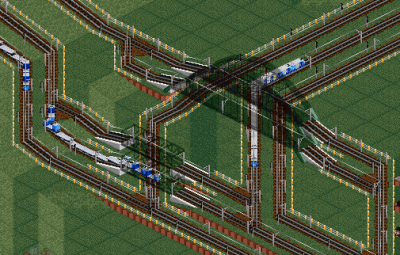
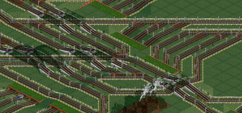
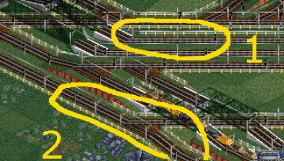
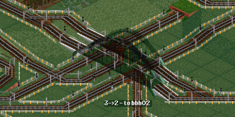

Building means signaling
In recent games it occured quite some times that patches of ML were found without any signals on it or even worse that hubs or station entrances or exits came without signaling, just plain tracks. All examples shown here are taken from the current public server game #97.  
Figure 1: properly signaled SLH (albeit unnamed!)
Missing signals are bad. Mostly they are not obvious on first sight, and may lead to network issues in quite distant parts due to back ups on the tracks. It’s no big issue, if a signaling is not the best available for complex cases, if you’re new to coop games – we all started off as newbies. But annoying are situations which require no knowledge of advanced signaling:
Figure 2: the tunnel entrances of the ML are not signaled, making the gap unneccessarily long. For busy situations these gaps will cause queuing and jams.


In general it is good practice to place signals adjacent to any tunnel or bridge – or the gap created by the bridge or tunnel will be even longer than it is already by itself. Also for a merge or a split, it is a good idea to keep the two-tile distance for the signals. This is especially true, if you build ML or hubs. After signaling it with the auto-signal tool make sure that you check the signaling before and after tunnels or bridges: 
Figure 3: signal gaps after bridge(1) and before split (2)


Figure 4: properly signaled bridge. Note that the lengths of the tracks for both bridges is also exactly alike.

Of, course, there are more complex situations. But we call it coop games because we talk to eachother about what and how we build. People connected to the server usually are quite willing to look over a piece of work finished. If you’re unsure while building, look a other locations in the game where maybe a hub or station already exists and adopt that solution to your needs. The best way to learn efficient signaling is always to actually DO it – not to wait for some guy to suddenly find a piece of track un-signaled while trying to find the reason of a huge jam. If you have to leave and signals are missing on where you were building: place sign like !signaling needed. This will make other players aware of work needed.
Besides that there are good guides in our wiki on building of priorities, of hubs and of station entrances and exits (well, there could be more entries). Look at the solutions described there and try to understand them. If you feel that something is missing there – make an addition to the appropriate wiki pages or maybe an addition to a game where you find good solutions.
Last, but not least: with everything you build, do it properly and have fun doing it 🙂
Categories: Public Server, Weekly Review
tneo June 2, 2008 10:02
Good article.
Osai June 2, 2008 20:11
Indeed. I like it too. But UpperCase Headlines look better IMHO. =)
planetmaker June 3, 2008 14:25
You have the power, Osai, to correct bad style :). Changed, though
dih June 3, 2008 14:37
i am a layz guy – i usually only lowercase everything 😛
Satya June 7, 2008 03:09
Removing obsolete signs might be good too 😉